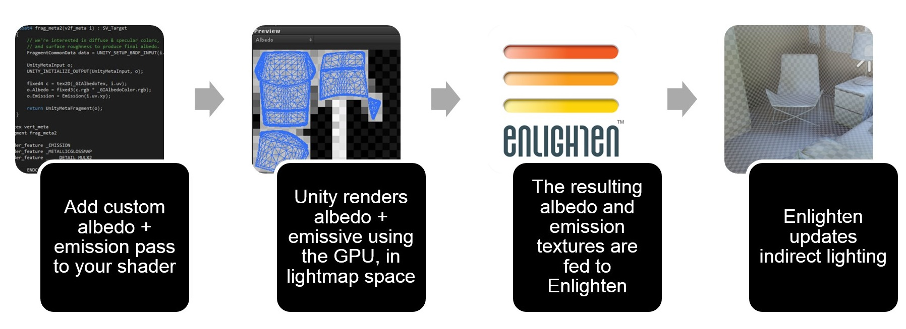

Material properties and the GI system
The way an object looks is defined by its Shader.
Legacy and current Shader mappings
Shader mappings in Unity versions 3 and 4 work in a different way to Shader mappings in Unity 5 onwards. The legacy Shader mappings are still supported in Unity 5 onwards. See Legacy material mappings, below.
Unity versions 3.x and 4.x used a simple mapping from material properties to lightmapper material properties. It worked for common cases but was based on naming conventions, tags and strings. You couldn’t do any custom surface properties as it was effectively hard coded to behave in a certain way. Unity version 5.0 onwards has flexible Shader mappings.
Meta pass (Unity 5.0 onwards)
Albedo and emissive are rendered using a special Meta Shader pass. Lightmap static GameObjects are rendered in lightmap space using the GPU. This means how the GameObject looks on screen and how it looks to the lightmapper are separate, so you can customize the Shaders.
The Meta pass decouples the albedo and emissive, which is used to compute Global Illumination (GI) during regular Shader passes. This allows you to control GI without affecting the Shader used for real-time rendering. The standard Shader contains a Meta pass by default. Global Illumination is managed in Unity by a piece of middleware called Enlighten.

The Meta pass is how the Unity Editor handles albedo for metallic surfaces internally. Enlighten handles diffuse transport and uses surface albedo on each bounce. Metallic surfaces with black (or almost black) albedo do not bounce any light. The Shader pass that renders albedo biases it towards a brighter color with the hue of the metal. Dielectric materials (wood, plastic, plastic, stone, concrete, leather, skin) have white specular reflectance. Metals have spectral specular reflectance.
Note: Using the Meta pass is not as fast as DynamicGI.SetEmissive, but it is more flexible because you are not limited to a single color.
Legacy material mappings
The built-in legacy Shaders in Unity version 5.0 and newer contain a Meta pass already. If you are upgrading projects from Unity versions before 5.0, you should add a Meta pass. See Example Shader with a Meta pass, below, to learn how.
Custom RGB transparency
You can add custom color-based RGB transparency by adding a texture property called _TransparencyLM to a Shader. In this case, the standard behavior is dropped and only the values of this texture are used to evaluate the transmission through the material. This is useful when you want to create color-based transparency that is independent of the material color or albedo texture.
To create custom transmission behavior, add the following line to a Shader and assign a Texture:
_TransparencyLM ("Transmissive Texture", 2D) = "white" {}
Note: Unity detects certain legacy Shaders by the Shader’s properties and path/name keywords, such as Transparent, Tree, Leaf, Leaves.
Example Shader with a Meta pass
The Shader below allows for specifying a custom albedo color and Texture just for the GI system.
Shader "Custom/metaPassShader"{
Properties {
_Color ("Color", Color)=(1,1,1,1)
_MainTex ("Albedo (RGB)",2D)="white"{}
_Glossiness ("Smoothness", Range(0,1))=0.5
_Metallic ("Metallic", Range(0,1))=0.0
_GIAlbedoColor ("Color Albedo (GI)", Color)=(1,1,1,1)
_GIAlbedoTex ("Albedo (GI)",2D)="white"{}
}
SubShader {
// ------------------------------------------------------------------
// Extracts information for lightmapping, GI (emission, albedo, ...)
// This pass is not used during regular rendering.
Pass
{
Name "META"
Tags {"LightMode"="Meta"}
Cull Off
CGPROGRAM
#include"UnityStandardMeta.cginc"
sampler2D _GIAlbedoTex;
fixed4 _GIAlbedoColor;
float4 frag_meta2 (v2f_meta i): SV_Target
{
// We're interested in diffuse & specular colors
// and surface roughness to produce final albedo.
FragmentCommonData data = UNITY_SETUP_BRDF_INPUT (i.uv);
UnityMetaInput o;
UNITY_INITIALIZE_OUTPUT(UnityMetaInput, o);
fixed4 c = tex2D (_GIAlbedoTex, i.uv);
o.Albedo = fixed3(c.rgb * _GIAlbedoColor.rgb);
o.Emission = Emission(i.uv.xy);
return UnityMetaFragment(o);
}
#pragma vertex vert_meta
#pragma fragment frag_meta2
#pragma shader_feature _EMISSION
#pragma shader_feature _METALLICGLOSSMAP
#pragma shader_feature ___ _DETAIL_MULX2
ENDCG
}
Tags {"RenderType"="Opaque"}
LOD 200
CGPROGRAM
// Physically-based Standard lighting model, and enable shadows on all light types
#pragma surface surf Standard fullforwardshadows nometa
// Use Shader model 3.0 target, to get nicer looking lighting
#pragma target 3.0
sampler2D _MainTex;
struct Input {
float2 uv_MainTex;
};
half _Glossiness;
half _Metallic;
fixed4 _Color;
void surf (Input IN,inout SurfaceOutputStandard o){
// Albedo comes from a texture tinted by color
fixed4 c = tex2D (_MainTex, IN.uv_MainTex)* _Color;
o.Albedo = c.rgb;
// Metallic and smoothness come from slider variables
o.Metallic = _Metallic;
o.Smoothness = _Glossiness;
o.Alpha = c.a;
}
ENDCG
}
FallBack "Diffuse"
}